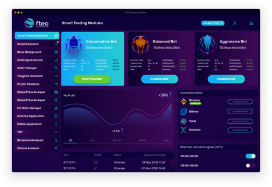
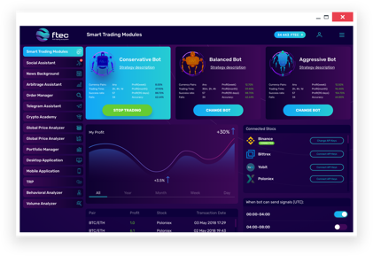

<div class="main-info main-info--desktop">

  <div class="middle middle--desktop">


    <div class="desktop__container">
      

      
    </div>

    <div class="desktop__container desktop__container--last">
      <h3 class="desktop__container-text">First Trading Ecosystem. Manage your trading activity even offline.</h3>

      <p class="desktop__container-text">Desktop App is a program solution for personal computers that provides
          access to all ecosystem functions. In addition, part of the functionality
          can be used offline.</p>

      <div class="desktop__container-images">
        

        
      </div>
    </div>


  </div>

</div>

